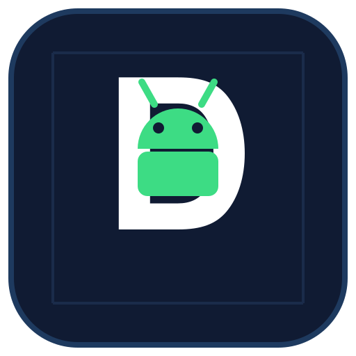

Deemwar's free and open-source Android apps, served directly at https://fdroid.deemwar.com/repo.
Install any F-Droid client (F-Droid, Droid-ify, or Neo Store), then add this repository:
https://fdroid.deemwar.com/repo?fingerprint=302cd39360ead81be14ef80102d41cc40d0e9783066ebd92cb05c74995b9e8cf
Every Deemwar app then appears in the client, installs with one tap, and auto-updates.
Deemwar Admin is a single curated installer for every app in this repo. It only installs apps signed by Deemwar's pinned keys, and can install silently on phones where a work policy blocks normal sideloading. A plain F-Droid client is enough for most phones — Deemwar Admin is for cert-pinning and silent install.
A work profile can set no_install_unknown_sources_globally, which blocks all non-Play installers (any F-Droid client and Deemwar Admin alike). The install is still possible as the ADB shell user, which that restriction does not gate. One-time setup, no PC needed after:
adb shell "exec $(pm path moe.shizuku.privileged.api | sed 's/package://;s/base.apk//')lib/arm64/libshizuku.so"
Apache-2.0 · source on request · https://fdroid.deemwar.com/repo